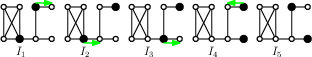
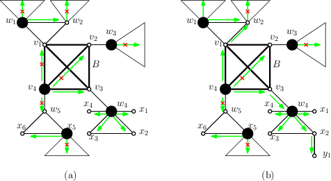
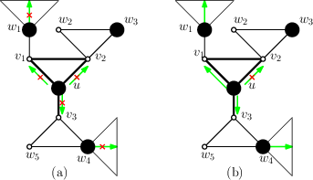

Abstract. Let \( I, J \) be two given independent sets of a graph \( G \). Imagine that the vertices of an independent set are viewed as tokens (coins). A token is allowed to move (or slide) from one vertex to one of its neighbors. The Sliding Token problem asks whether there exists a sequence of independent sets of \( G \) starting from \( I \) and ending with \( J \) such that each intermediate member of the sequence is obtained from the previous one by moving a token according to the allowed rule. In this paper, we claim that this problem is solvable in polynomial time when the input graph is a block graph—a graph whose blocks are cliques. Our algorithm is developed based on the characterization of a non-trivial structure that, in certain conditions, can be used to indicate a no-instance of the problem. Without such a structure, a sequence of token slidings between any two independent sets of the same cardinality exists.
Recently, motivated by the purpose of understanding the solution space of a problem, many theoretical computer scientists have focused on the study of reconfiguration problems. Reconfiguration problems are the set of problems in which we are given a collection of feasible solutions, together with some reconfiguration rule(s) that defines an adjacency relation on the set of feasible solutions of the original problem. The question is, using a reconfiguration rule, whether there is a step-by-step transformation which transforms one feasible solution to another, such that each intermediate result is also feasible. A simple example is the famous Rubik's cube puzzle. The reconfigurability of several well-known problems, including satisfiability, independent set, vertex-colouring, matching, clique, etc. have been studied extensively. For more information about this research area, see the survey [1].
As the independent set problem is one of the most important problems in the computational complexity theory, its reconfiguration variants have been well-studied [2] [3] [4]. Recall that an independent set of a graph is a set of pairwise non-adjacent vertices. Among these variants, the Sliding Token problem (first introduced by Hearn and Demaine [2]) is of particular interest (see [4] for the other variants). Given two independent sets \( \bfI \) and \( \bfJ \) of a graph \( G \), and imagine that a token is placed on each vertex in \( \bfI \). Then, the Sliding Token problem asks whether there exists a sequence (called a \( \sfTS \)-sequence) \( \calS = \langle \bfI_1, \bfI_2, \ldots, \bfI_{\ell} \rangle \) of independent sets of \( G \) such that
Figure 1: Example of a \( \sfTS \)-sequence \( \langle \bfI_1, \bfI_2, \dots, \bfI_5 \rangle \) in a given graph that reconfigures \( \bfI_1 \) to \( \bfI_5 \). The vertices in independent sets are depicted by black circles (tokens).

A block of a graph \( G \) is a maximal connected subgraph with no cut vertex. A block graph is a graph whose blocks are cliques (for example, see the graph in Fig. 1). Note that, in order to preserve the independence property of the set of tokens, a token sometimes needs to make "detours". This restriction indeed makes Sliding Token more complicated (recall that the problem is \( \sfPSPACE \)-complete even for bounded-treewidth graphs), even when the input graph is a tree (see [7]). As there might be exponential number of paths between any two vertices of a block graph (while in a tree, there is a unique path), for each token, we may have exponentially many choices of "routes" to slide and possibly super polynomial detours in general. Thus, in this case, the problem becomes more difficult. In this paper, we design a polynomial-time algorithm for solving the Sliding Token problem for block graphs.
Our algorithm is designed based on the following observations. Given a block graph \( G \) and an independent set \( \bfI \) of \( G \), one can characterize the properties of a non-trivial structure, called \( (G, \bfI) \)-confined clique (Section 4). More precisely, we claim that one can find all \( (G, \bfI) \)-confined cliques in polynomial time (Lemma 3), and, in certain conditions, we can easily derive if an instance of Sliding Token is a no-instance (Lemma 5). Without such a structure, we claim that for any pair of independent sets \( \bfI, \bfJ \), \( \bfI \) is reconfigurable to \( \bfJ \) (and vice versa) if and only if they are of the same cardinality (Lemma 9).
Due to the limitation of space, some proofs are omitted.
We define some notation that is commonly used in graph theory. For the notation that is not mentioned here, see [10]. Let \( G \) be a given graph, with edge set \( E(G) \) and vertex set \( V(G) \).
We sometimes denote by \( \msize{G} \) the size of \( V(G) \). For a vertex \( v \), we define \( \Nei{G}{v} = \{w \in V(G): vw \in E(G)\} \), \( \Neiclosed{G}{v} = \Nei{G}{v} \cup \{v\} \) and \( \deg_G(v) = |\Nei{G}{v}| \). For two vertices \( u, v \), we denote by \( \dist_G(u, v) \) the distance between \( u \) and \( v \) in \( G \). For a graph \( G \), sometimes we write \( \bfI \cap G \) and \( \bfI - G \) to indicate the sets \( \bfI \cap V(G) \) and \( \bfI \setminus V(G) \), respectively.
For \( X \subseteq V(G) \), we denote by \( G[X] \) the subgraph of \( G \) induced by vertices of \( X \). We write \( G - X \) to indicate the graph \( G[V(G) \setminus X] \). Similarly, for an induced subgraph \( H \) of \( G \), \( G - H \) indicates the graph \( G[V(G) \setminus V(H) \), and we say that the graph \( G - H \) is obtained by removing \( H \) from \( G \).
We now define some useful notation for tackling Sliding Token. For a \( \sfTS \)-sequence \( \calS \), we write \( \bfI \in \calS \) if an independent set \( \bfI \) of \( G \) appears in \( \calS \). For a vertex \( v \), if there exists \( \bfI \in \calS \) such that \( v \in \bfI \), then we say that \( \calS \) involves \( v \). We say that \( \calS = \langle \bfI_1, \bfI_2, \ldots, \bfI_{\ell} \rangle \) slides (or moves) the token \( t \) placed at \( u \in \bfI_1 \) to \( v \notin \bfI_1 \) in \( G \) if after applying the sliding steps described in \( \calS \), the token \( t \) is placed at \( v \in \bfI_\ell \). For convenience, we sometimes identify the token placed at a vertex with the vertex itself, and simply say "a token in an independent set \( \bfI \)."
Let \( W \subseteq V(G) \) and assume that \( \bfI \cap W \neq \emptyset \). We say that a token \( t \) placed at some vertex \( u \in \bfI \cap W \) is \( (G, \bfI, W) \)-confined if for every \( \bfJ \) such that \( \bfI \sevstepT{G} \bfJ \), \( t \) is always placed at some vertex of \( W \). In other words, \( t \) can only be slid along edges of \( G[W] \). In case \( W = \{u\} \), \( t \) is said to be \( (G, \bfI) \)-rigid. The token \( t \) is \( (G, \bfI) \)-movable if it is not \( (G, \bfI) \)-rigid.
Let \( H \) be an induced subgraph of \( G \). \( H \) is called \( (G, \bfI) \)-confined if \( \bfI \cap H \) is a maximum independent set of \( H \) and all tokens in \( \bfI \cap H \) are \( (G, \bfI, V(H)) \)-confined. In particular, if \( H \) is a clique of \( G \), we say that it is a \( (G, \bfI) \)-confined clique. Note that if \( H \) is a clique then \( \msize{\bfI \cap H} \leq 1 \). We denote by \( \ConfinedCliques{G, \bfI} \) the set of all \( (G, \bfI) \)-confined cliques of \( G \). For a vertex \( v \in V(H) \), we define \( G^v_H \) to be the (connected) component of \( G_H \) containing \( v \), where \( G_H \) is obtained from \( G \) by removing all edges of \( H \).
In this section, we present several useful observations. These observations will be implicitly used in many statements of this paper. The next proposition characterizes some properties of a \( (G, \bfI) \)-confined induced subgraph.
Proposition 1 [[9] (Lemma 1)]. Let \( \bfI \) be an independent set of a graph \( G \). Let \( H \) be an induced subgraph of \( G \). Then the following conditions are equivalent.
The next proposition says that when \( G \) is disconnected, one can deal with each component separately. In other words, when dealing with Sliding Token, it suffices to consider only connected graphs.
Proposition 2 [[9] (Proposition 2)]. Let \( \bfI \), \( \bfJ \) be two given independent set of \( G \). Assume that \( G_1, \dots, G_k \) are the components of \( G \). Then \( \bfI \sevstepT{G} \bfJ \) if and only if \( \bfI \cap G_i \sevstepT{G_i} \bfJ \cap G_i \) for \( i = 1, 2, \dots, k \).
In the next proposition, we claim that in certain conditions, a \( \sfTS \)-sequence in a subgraph of \( G \) can be somehow "extended" to a sequence in \( G \), and vice versa.
Proposition 3 [[9] (Proposition 3)]. Let \( u \) be a vertex of a graph \( G \). Let \( \calS = \langle \bfI_1, \bfI_2, \dots, \bfI_\ell \rangle \) be a \( \sfTS \)-sequence in \( G \) such that for any \( \bfI \in \calS \), \( u \in \bfI \). Let \( \Gpp = G - \Neiclosed{G}{u} \). Then \( \bfI_1 \cap \Gp \sevstepT{\Gpp} \bfI_\ell \cap \Gp \). Moreover, for any \( \sfTS \)-sequence \( \calSp = \langle \bfIp_1, \dots, \bfIp_l \rangle \) in \( \Gpp \), \( \bfIp_1 \cup \{u\} \sevstepT{G} \bfIp_l \cup \{u\} \).
In case \( G \) is a block graph, we also have:
Proposition 4. Let \( \bfI \) be an independent set of a block graph \( G \). Let \( B \) be a block of \( G \) and suppose that \( \bfI \cap B = \{u\} \). Let \( \calS = \langle \bfI_1, \bfI_2, \dots, \bfI_\ell \rangle \) be a \( \sfTS \)-sequence in \( G \) such that for any \( \bfJ \in \calS \), \( u \in \bfJ \). Let \( \Gp = G - B \). Then \( \bfI_1 \cap \Gp \sevstepT{\Gp} \bfI_\ell \cap \Gp \). Moreover, for any \( \sfTS \)-sequence \( \calSp = \langle \bfIp_1, \dots, \bfIp_l \rangle \) in \( \Gp \) such that \( \Nei{G}{u} \cap \bfIp_i = \emptyset \), where \( i \in \{1, 2, \dots, \ell\} \), \( \bfIp_1 \cup \{u\} \sevstepT{G} \bfIp_l \cup \{u\} \).
Proposition 5. Let \( G \) be a block graph and let \( \bfI \) be an independent set of \( G \). Let \( v \in V(G) \) be such that no token in \( \Nei{G}{v} \cap \bfI \) is \( (G, \bfI, \Neiclosed{G}{v}) \)-confined. Then there exists an independent set \( \bfJ \) of \( G \) such that \( \bfI \sevstepT{G} \bfJ \) and \( \Neiclosed{G}{v} \cap \bfJ = \emptyset \).
Proposition 6. Let \( \bfI \) be an independent set of a block graph \( G \). Let \( w \in V(G) \). Assume that no block of \( G \) containing \( w \) is \( (G, \bfI) \)-confined. If there exists some vertex \( x \in \Neiclosed{G}{w} \cap \bfI \) such that the token \( t_x \) placed at \( x \) is \( (G, \bfI, \Neiclosed{G}{w}) \)-confined, then \( x \) is unique. Consequently, there must be some independent set \( \bfJ \) such that \( \bfI \sevstepT{G} \bfJ \) and \( \Neiclosed{G}{w} \cap \bfJ = \{x\} \). Moreover, let \( H \) be the graph obtained from \( G \) by turning \( \Neiclosed{G}{w} \) into a clique, called \( B_w \). Then \( t_x \) is \( (G, \bfJ, \Neiclosed{G}{w}) \)-confined if and only if \( B_w \) is \( (H, \bfJ) \)-confined.
In this section, we show that one can compute \( \ConfinedCliques{G, \bfI} \) in polynomial time, where \( G \) is a block graph and \( \bfI \) is an independent set of \( G \). First, we prove an useful characterization of \( (G, \bfI) \)-confined cliques.
Lemma 1. Let \( \bfI \) be an independent set of a block graph \( G \). Let \( B \) be a block of \( G \) with \( \bfI \cap B \neq \emptyset \). Let \( \Gp = G - B \). Then \( B \) is \( (G, \bfI) \)-confined (see Fig. 2(a)) if and only if either \( G = B \) or for every cut vertex \( v \in V(B) \), one of the following conditions holds.
Figure 2: (a) \( B \) is \( (G, \bfI) \)-confined and (b) \( B \) is not \( (G, \bfI) \)-confined.

Next, we characterize \( (G, \bfI) \)-rigid tokens.
Lemma 2. Let \( \bfI \) be an independent set of a block graph \( G \). Let \( u \in \bfI \). The token \( t \) placed at \( u \) is \( (G, \bfI) \)-rigid (see Fig. 3) if and only if for every \( v \in \Nei{G}{u} \), there exists a vertex \( w \in \big(\Nei{G}{v} \setminus \{u\}\big) \cap \bfI \) such that one of the following conditions holds.
Figure 3: (a) The token placed at \( u \) is \( (G, \bfI) \)-rigid and (b) The token placed at \( u \) is \( (G, \bfI) \)-movable.

The next lemma says that one can compute all \( (G, \bfI) \)-confined blocks in polynomial time, where \( G \) is a block graph and \( \bfI \) is an independent set of \( G \).
Lemma 3. Let \( \bfI \) be an independent set of a block graph \( G \). Let \( m = \msize{E(G)} \). Let \( B \) be a block of \( G \) with \( \bfI \cap B \neq \emptyset \). Then, one can check if \( B \) is \( (G, \bfI) \)-confined in \( O(m) \) time. Consequently, one can compute \( \ConfinedCliques{G, \bfI} \) in \( O(m^2) \) time.
Proof. We describe a recursive function CheckConfined(\( G \), \( \bfI \), \( H \)) which returns yes if an input induced subgraph \( H \) is \( (G, \bfI) \)-confined, where \( \bfI \) is an independent set of \( G \) and \( H \) is either a clique or a vertex. Otherwise, it returns no and a \( \sfTS \)-sequence \( \calS_H \) in \( G \) which slides the token in \( \bfI \cap H \) (if exists) to a vertex in \( \bigcup_{v \in V(H)}\Nei{G}{v} \setminus V(H) \). Clearly, if \( \bfI \cap H = \emptyset \) then CheckConfined(\( G \), \( \bfI \), \( H \)) returns no and there is no such \( \calS_H \) described above. Thus, we now assume that \( \bfI \cap H \neq \emptyset \). Note that since \( H \) is either a clique or a vertex, \( \msize{\bfI \cap H} = 1 \). By definition, it is clear that if \( G = H \) then CheckConfined(\( G \), \( \bfI \), \( H \)) returns yes. Then, we now consider the case when \( G \neq H \), i.e., \( G \) contains more than one block. Let \( u \) be the unique vertex in \( \bfI \cap H \), and \( t_u \) be the token placed at \( u \). Let \( \Gp = G - H \) and \( \Gpp = G - \Neiclosed{G}{u} \). If \( H \) is a clique, we will use Lemma 1 to check if \( H \) is \( (G, \bfI) \)-confined. On the other hand, if \( H \) contains only vertex \( u \) (i.e., \( H = (\{u\}, \emptyset) \)), we will use Lemma 2 to check if \( H \) is \( (G, \bfI) \)-confined (by definition, it is equivalent to checking if \( t_u \) is \( (G, \bfI) \)-rigid).
If \( H \) is a clique, then by Lemma 1, for every cut vertex \( v \in V(H) \), we need to check if one of the conditions (i), (ii) of Lemma 1 holds. Note that since \( v \) is a cut vertex, there is at least one block \( \Bp \neq H \) of \( G \) containing \( v \). To check if Lemma 1(i) holds, we recursively call CheckConfined(\( \Gp \), \( \bfI \cap \Gp \), \( \Bp - v \)) for every block \( \Bp \neq H \) of \( G \) containing \( v \). If CheckConfined(\( \Gp \), \( \bfI \cap \Gp \), \( \Bp - v \)) returns no for all blocks \( \Bp \neq H \) of \( G \) containing \( v \), i.e. Lemma 1 (i) does not hold, we can construct a \( \sfTS \)-sequence \( \calS_v \) in \( G \) that slides \( t_u \) to \( v \) as follows. If \( u = v \) then nothing needs to be done. Thus, we assume that \( u \neq v \), which then implies that \( v \notin \bfI \). In order to slide \( t_u \) to \( v \), we need to make sure that for every block \( \Bp \neq H \) of \( G \) containing \( v \), if \( \bfI \cap (\Bp - v) \neq \emptyset \), the token in \( \bfI \cap (\Bp - v) \) need to be moved to a vertex not in \( \Bp - v \) first. To do this, note that for each such \( \Bp \), the function CheckConfined(\( \Gp \), \( \bfI \cap \Gp \), \( \Bp - v \)) also returns a \( \sfTS \)-sequence \( \calS_{\Bp - v} \) in \( \Gp \) that slides the token in \( \bfI \cap (\Bp - v) \) to a vertex in \( \bigcup_{x \in V(\Bp - v)}\Nei{\Gp}{x} \setminus V(\Bp - v) \). By Proposition 4, such a sequence \( \calS_{\Bp - v} \) can indeed be performed in \( G \). Hence, \( \calS_v \) can be constructed (using the results from CheckConfined(\( \Gp \), \( \bfI \cap \Gp \), \( \Bp - v \))) by first performing all \( \calS_{\Bp - v} \), then performing a single step of sliding \( t_u \) to \( v \). If Lemma 1(i) does not hold, for every \( w \in \Nei{G}{v} \setminus V(H) \), we need to check if Lemma 1(ii) holds. We first need to check whether there exists a block \( \Bpp \) of \( \Gp \) containing \( w \) such that \( \Bpp \) is \( (\Gp, \bfI \cap \Gp) \)-confined. This can be done by calling CheckConfined(\( \Gp \), \( \bfI \cap \Gp \), \( \Bpp \)) for all blocks \( \Bpp \) of \( \Gp \) containing \( w \) such that \( \bfI \cap \Bpp \neq \emptyset \). If the result is no for every such \( \Bpp \), i.e., Lemma 1(ii-1) does not hold, we still need to check if Lemma 1(ii-2) holds. To do this, we consider the following cases.
In the above arguments, we have analyzed the cases that CheckConfined(\( G \), \( \bfI \), \( H \)) returns no using Lemma 1, where \( H \) is a clique. In all other cases, CheckConfined(\( G \), \( \bfI \), \( H \)) indeed returns yes (by Lemma 1).
If \( H \) contains only a single vertex \( u \), then by Lemma 2, we need to check that for every \( v \in \Nei{G}{u} \), whether there exists a vertex \( w \in \big(\Nei{G}{v} \setminus \{u\}\big) \cap \bfI \) such that one of the conditions (i), (ii) of Lemma 2 holds. Clearly, if \( \big( \Nei{G}{v} \setminus \{u\} \big) \cap \bfI = \emptyset \), one can construct a \( \sfTS \)-sequence \( \calS_H \) that slides \( t_u \) to \( v \) by performing the single step of sliding \( t_u \) to \( v \), and hence CheckConfined(\( G \), \( \bfI \), \( H \)) returns no. Next, we consider the case when \( \big( \Nei{G}{v} \setminus \{u\} \big) \cap \bfI \neq \emptyset \). In this case, for every \( w \in \big( \Nei{G}{v} \setminus \{u\} \big) \cap \bfI \), we recursively call CheckConfined(\( \Gpp \), \( \bfI \cap \Gpp \), \( \{w\} \)) to check if Lemma 2(i) holds. If CheckConfined(\( \Gpp \), \( \bfI \cap \Gpp \), \( \{w\} \)) = no for all \( w \in \big( \Nei{G}{v} \setminus \{u\} \big) \cap \bfI \), we still need to check if Lemma 2(ii) holds by calling CheckConfined(\( \Gpp \), \( \bfI \cap \Gpp \), \( B_w - v \)) for all \( w \in \big( \Nei{G}{v} \setminus \{u\} \big) \cap \bfI \), where \( B_w \) denotes the (unique) block of \( G \) containing both \( v, w \). If CheckConfined(\( \Gpp \), \( \bfI \cap \Gpp \), \( B_w - v \)) returns no for all \( w \in \big( \Nei{G}{v} \setminus \{u\} \big) \cap \bfI \), we can indeed return no for the function CheckConfined(\( G \), \( \bfI \), \( H \)). The \( \sfTS \)-sequence \( \calS_H \) that moves \( t_u \) to \( v \) in this case can be constructed as follows. For each \( w \in \big( \Nei{G}{v} \setminus \{u\} \big) \cap \bfI \), since CheckConfined(\( \Gpp \), \( \bfI \cap \Gpp \), \( B_w - v \)) returns no, there must be a \( \sfTS \)-sequence \( \calS_{\Bp - v} \) in \( \Gpp \) (which can be extended to \( G \) using Proposition 3) that slides the token in \( \bfI \cap (\Bp - v) \) to a vertex in \( \bigcup_{z \in V(\Bp - v)}\Nei{\Gp}{\Bp - v} \setminus V(\Bp - v) \). \( \calS_H \) then can be constructed by first performing all such \( \calS_{\Bp - v} \), and then performing a single step of sliding \( t_u \) to \( v \). In the above arguments, we have analyzed the cases that CheckConfined(\( G \), \( \bfI \), \( H \)) returns no using Lemma 2, where \( H \) is a vertex. In all other cases, CheckConfined(\( G \), \( \bfI \), \( H \)) indeed returns yes (by Lemma 2).
Next, we analyze the complexity of the described algorithm. First of all, note that all the \( \sfTS \)-sequences mentioned in the described algorithm can indeed be construction using the results from the recursive callings of the CheckConfined function. Thus, the running time of our algorithm is indeed proportional to the number of callings of the CheckConfined function. For a vertex \( v \in V(G) \), let \( f(v) \) be the number of calling CheckConfined related to \( v \), in the sense that the function CheckConfined is either called for \( v \) or for a block containing \( v \). Thus, the total number of callings CheckConfined is indeed bounded by \( \sum_{v \in V(G)}f(v) \). Moreover, from the described algorithm, note that \( f(v) \) is at most \( O(\deg_G(v)) \). Hence, checking if \( H \) is \( (G, \bfI) \)-confined takes at most \( O(\sum_{v \in V(G)}\deg_G(v)) = O(m) \) time, where \( H \) is either a clique or a vertex. Consequently, since the number of blocks of \( G \) is \( O(m) \), computing \( \ConfinedCliques{G, \bfI} \) takes at most \( O(m^2) \) time.
Let \( G \) be a block graph, and let \( \bfI, \bfJ \) be two independent sets of \( G \). In this section, we prove the following main result of this paper.
Theorem 1. Let \( (G, \bfI, \bfJ) \) be an instance of the Sliding Token problem, where \( \bfI, \bfJ \) are two independent sets of a block graph \( G \). Then, one can decide if \( \bfI \sevstepT{G} \bfJ \) in \( O(m^2) \) time, where \( m = \msize{E(G)} \).
To prove Theorem 1, we shall describe a polynomial-time algorithm for deciding if \( \bfI \sevstepT{G} \bfJ \), estimate its running time, and then prove its correctness. The following algorithm checks if \( \bfI \sevstepT{G} \bfJ \).
The rest of this section is devoted to showing the correctness of the algorithm. First of all, the following lemma is useful.
Lemma 4. Let \( \bfI \) be an independent set of a block graph \( G \). Let \( w \in V(G) \). Assume that every block of \( G \) containing \( w \) is not \( (G, \bfI) \)-confined. Then, there is at most one block \( B \) of \( G \) containing \( w \) such that \( B - w \) is \( (\Gp, \bfI \cap \Gp) \)-confined, where \( \Gp = G - w \).
The next lemma ensures the correctness of Step 1-1.
Lemma 5. Let \( (G, \bfI, \bfJ) \) be an instance of the Sliding Token problem, where \( \bfI, \bfJ \) are two independent sets of a block graph \( G \). Then, it is a no-instance if \( \ConfinedCliques{G, \bfI} \neq \ConfinedCliques{G, \bfJ} \).
In the next lemma, we claim that Step 1-2 is correct.
Lemma 6. Let \( (G, \bfI, \bfJ) \) be an instance of the Sliding Token problem, where \( \bfI, \bfJ \) are two independent sets of a block graph \( G \) satisfying that \( \ConfinedCliques{G, \bfI} = \ConfinedCliques{G, \bfJ} \). Let \( \Gp \) be the graph obtained from \( G \) by removing all cliques in \( \ConfinedCliques{G, \bfI} = \ConfinedCliques{G, \bfJ} \). Then, \( \bfI \sevstepT{G} \bfJ \) if and only if \( \bfI \cap \Gp \sevstepT{\Gp} \bfJ \cap \Gp \). Furthermore, \( \ConfinedCliques{\Gp, \bfI \cap \Gp} = \ConfinedCliques{\Gp, \bfJ \cap \Gp} = \emptyset \).
Proof. Let \( \calS = \langle \bfI = \bfI_1, \bfI_2, \dots, \bfI_\ell = \bfJ \rangle \) be a \( \sfTS \)-sequence in \( G \) that reconfigures \( \bfI \) to \( \bfJ \). We claim that there exists a \( \sfTS \)-sequence \( \calSp \) in \( \Gp \) that reconfigures \( \bfI \cap \Gp \) to \( \bfJ \cap \Gp \). Note that for any independent set \( \bfI \) of \( G \), \( \bfI \cap \Gp \) forms an independent set of \( \Gp \). Moreover, for \( i = 1, 2, \dots, \ell - 1 \), let \( uv \) be an edge of \( G \) such that \( u \in \bfI_i \setminus \bfI_{i+1} \) and \( v \in \bfI_{i+1} \setminus \bfI_i \), then clearly \( u \) and \( v \) must be either both in \( \Gp \) or both in some block \( B \in \ConfinedCliques{G, \bfI} \). Hence, the sequence \( \calSp = \langle \bfI_1 \cap \Gp, \dots, \bfI_\ell \cap \Gp \rangle \) reconfigures \( \bfI_1 \cap \Gp = \bfI \cap \Gp \) to \( \bfI_\ell \cap \Gp = \bfJ \cap \Gp \).
Let \( \calSp = \langle \bfI \cap \Gp = \bfIp_1, \bfIp_2, \dots, \bfIp_l = \bfJ \cap \Gp \rangle \) be a \( \sfTS \)-sequence in \( \Gp \) that reconfigures \( \bfI \cap \Gp \) to \( \bfJ \cap \Gp \). We claim that there exists a \( \sfTS \)-sequence \( \calS \) in \( G \) that reconfigures \( \bfI = (\bfI \cap \Gp) \cup \bigcup_{B \in \ConfinedCliques{G, \bfI}}(\bfI \cap B) \) to \( \bfJ = (\bfJ \cap \Gp) \cup \bigcup_{B \in \ConfinedCliques{G, \bfI}}(\bfJ \cap B) \). Note that for an independent set \( \bfIp \) of \( \Gp \) and a block \( B \in \ConfinedCliques{G, \bfI} \), it is not necessary that \( \bfIp \cup (\bfIpp \cap B) \) forms an independent set of \( G \), where \( \bfIpp \) is an independent set of \( G \) such that \( \bfI \sevstepT{G} \bfIpp \). For a component \( F \) of \( \Gp \), one can construct a \( \sfTS \)-sequence \( \calSp_F = \langle \bfIp_1 \cap F, \dots, \bfIp_l \cap F \rangle \) in \( F \). We now describe how to construct \( \calS \). Let \( A = \bigcup_{B \in \ConfinedCliques{G, \bfI}}\bigcup_{v \in \bfI \cap B}\big( \Nei{G}{v} \cap V(F) \big) \). For a component \( F \) of \( \Gp \), we consider the following cases.
Now, we construct a \( \sfTS \)-sequence \( \calS \) in \( G \) that reconfigures \( \bfI \) to \( \bfJ \) as follows. First, we perform all \( \sfTS \)-sequence \( \calSp_F \) that does not involve any vertex in \( A \). Next, for a component \( F \) with the corresponding sequence \( \calSpp_F \) involving let \( B \in \ConfinedCliques{G, \bfI} \) such that there exists a (unique) vertex \( v \in \bfI \cap B \) satisfying that \( \Nei{G}{v} \cap V(F) \subseteq A \). For such component \( F \) and such block \( B \), we first perform \( \calSp(B, v) \), then perform \( \calSp_F \), and then perform \( \calSp(B, v) \) in reverse order. Note that if after performing \( \calSp(B, v) \), the token \( t_v \) (originally placed at \( v \)) is placed at some vertex \( w \in \bfJ \), then in the step of reversing \( \calSp(B, v) \), we do not reverse the step of sliding \( t_v \) to \( w \). At this moment, we have reconfigured \( \bfI \cap \Gp \) to \( \bfJ \cap \Gp \) in \( G \). It remains to reconfigure \( \bfI \cap B \) to \( \bfJ \cap B \) in \( G \) for each block \( B \in \ConfinedCliques{G, \bfI} \), which can be done using the observation that for any vertex \( v \in \bfJ \cap B \), \( \Nei{G}{v} \cap \bfJ \neq \emptyset \).
Finally, we claim that \( \ConfinedCliques{\Gp, \bfI \cap \Gp} = \emptyset \). Similar arguments can also be applied for showing \( \ConfinedCliques{\Gp, \bfJ \cap \Gp} = \emptyset \). Assume for the contradiction that there exists some block \( B^\prime \in \ConfinedCliques{\Gp, \bfI \cap \Gp} \). Let \( v \) be the unique vertex in \( \bfI \cap B^\prime \), and let \( B \) be the block of \( G \) containing \( \Bp \). We consider the following cases.
Before proving the correctness of Step 2, we need some extra definitions. Let \( B \) be a block of a block graph \( G \). A block \( \Bp \neq B \) of \( G \) is called a neighbor of \( B \) if \( V(B) \cap V(\Bp) \neq \emptyset \). \( B \) is called safe if it has at most one cut vertex and at most one neighbor having more than one cut vertex. A vertex \( v \in V(G) \) is called safe if it is a non-cut vertex of a safe block of \( G \).
The next two lemmas are useful for showing the correctness of Step 2.
Lemma 7. Let \( \bfI \) be an independent set of a block graph \( G \) such that \( \ConfinedCliques{G, \bfI} = \emptyset \). Let \( v \) be a safe vertex of \( G \). Then, there exists an independent set \( \bfJ \) of \( G \) with \( \bfI \sevstepT{G} \bfJ \) and \( v \in \bfJ \).
Lemma 8. Let \( \bfI \) be an independent set of a block graph \( G \) such that \( \ConfinedCliques{G, \bfI} = \emptyset \). Let \( v \in \bfI \) be a safe vertex of \( G \) and let \( B_v \) be the (unique) safe block of \( G \) containing \( v \). Let \( \Gstar \) be the subgraph of \( G \) obtained by removing \( B_v \). Then, \( \ConfinedCliques{\Gstar, \bfI \cap \Gstar} = \emptyset \).
The following lemma ensures the correctness of Step 2.
Lemma 9.
Let \( (G, \bfI, \bfJ) \) be an instance of the Sliding Token problem, where \( \bfI, \bfJ \) are two independent sets of a block graph \( G \) satisfying that \( \ConfinedCliques{G, \bfI} = \ConfinedCliques{G, \bfJ} = \emptyset \). Then, \( \bfI \sevstepT{G} \bfJ \) if and only if \( \msize{\bfI} = \msize{\bfJ} \).
Proof. The only-if-part is trivial. We shall prove the if-part, i.e., if \( \msize{\bfI} = \msize{\bfJ} \) then \( \bfI \sevstepT{G} \bfJ \). More precisely, we claim that there exists an independent set \( \bfIstar \) such that \( \bfI \sevstepT{G} \bfIstar \) and \( \bfJ \sevstepT{G} \bfIstar \). Indeed, \( \bfIstar \) can be constructed as follows. Initially, \( \bfIstar = \emptyset \).
Acknowledgement. The first author would like to thank Yota Otachi for his useful discussions. This work is partially supported by MEXT/JSPS Kakenhi Grant Number 26330009 and 24106004.